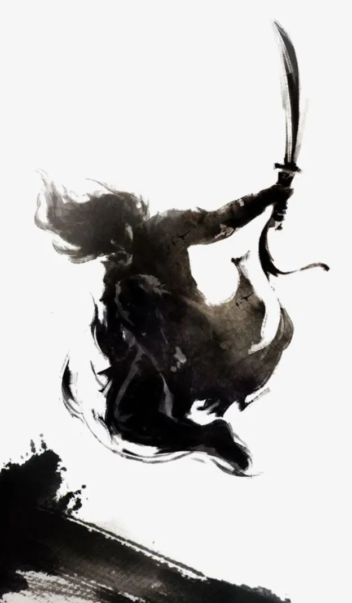

Budō (武道) is a Japanese term that consists of two kanji characters meaning Martial (Bu) Way (Dō). This term typically encompasses all Japanese martial arts, including Karate-Dō, Judo, Kendo, and Jodo.. Ultimately, the aim of any Budō practice is to restore balance and harmony to any disturbance.
Understanding Budō Culture
Budō Culture encompasses the behaviors, rituals, traditions, beliefs, customs, and habits inherent in martial arts practice. This term designates a group of elite martial artists who follow the way and rituals of the warrior class. To understand Budō Culture, one must grasp the essence or heart of how practitioners engage with Budō.
Key Aspects of Budō Culture:
- Seekers of Truth: Practitioners of Budō strive for more than just daily routines or material gain; they actively pursue a deeper purpose and fulfillment in their martial arts journey. In addition, they possess abilities and skills that enable them to uniquely contribute to society. Moreover, their commitment to personal growth and ethical conduct enhances their impact on the community.
- Misconceptions:Many people mistakenly view Budō as a combative sport centered on aggression and the quest for medals and trophies. This stereotype stems from a lack of understanding and prevalent misconceptions
- Ethical Standards: Given the potentially dangerous nature of martial arts practice, practitioners must adhere to ethical standards and follow the code of Bushidō, the way of the warrior. Consequently, these guidelines ensure the safety and integrity of all practitioners. All martial artists must follow these rules, which have existed in Japan for centuries.
- Bushidō: This demands both physical and non-physical qualities such as courtesy, sincerity, loyalty, discipline, and courage. These rules govern interactions among practitioners, revealing egos during the journey of confronting fear and pain, and helping to bridge gaps that may lead to conflicts.
Historical Context
The culture of Budō intertwines with the history of martial arts and the various schools and styles of martial practices that have emerged over the years.
- Bodhidharma’s Influence: When Bodhidharma traveled to China in 527 AD, he brought customs, rituals, and schools of thought associated with Chan Buddhism and merged them with the practices of the Shaolin Monastery, ultimately leading to the creation of Shaolin Kung-Fu.
- Cultural Exchange: By the 1400s, China and Okinawans were trading goods, services, and martial arts; consequently, this exchange created another dimension within the cultural entanglement of Budō.
- Samurai Legacy: The history and development of the Samurai, dating back to the 12th century, deeply root Budō culture.Martial arts known as ‘Koryū’ (古流, meaning old style) emerged during this period; consequently, historical Samurai used them on the battlefield and later developed these practices. Modern dojos continue to uphold these traditions through teachings passed down by masters. dojos continue to practice these traditions through teachings passed down by masters.
Examples of Budō Culture
For simplicity, we can categorize Budō Culture into three main areas:
- Dojo Rituals:
- One important aspect of dojo rituals is removing shoes before entering the dojo; this practice symbolizes respect for the training space and maintains its cleanliness.
- Paying respect to shrines, ancestors, and teachers
- Bowing into the dojo and to opponents
- Wearing specific attire
- Studying classic texts such as Miyamoto Musashi’s writings, The Art of War, and the Bubishi
- Health Rituals:
- Following wellness routines, such as Ikigai, practitioners of Budō cultivate a balanced lifestyle that promotes both physical and mental well-being.
- Participating in tea ceremonies
- Lighting incense
- Engaging in Geisha rituals and Shiatsu massage
- Studying the “Yellow Emperor’s Classic”
- Spiritual Rituals:
- Practicing Zazen (seated meditation) and Mokuso (meditation at the beginning and end of practice)
- Maintaining Zen gardens
- Studying the teachings of masters and Zen philosophy
- Practicing Sumi-e (Japanese ink painting)
Understanding Budō Culture requires appreciating the blend of physical practice, ethical conduct, historical context, and spiritual pursuit. This blend defines the way of the warrior.
———————————————————————
Examples of Budō Culture: Below are some examples of the diversity of Budō Culture and how far it can stretch.To simplify, we can categorize these examples into three distinct areas:
Dojo Rituals; removing of shoes, paying respect to shrines/ancestors/teachers. bowing into the Dojo, bowing to your opponent, wearing of a certain attire, study of the Miyamoto Musashi, study of the Art of War and study of Bubishi.
Health Rituals: Following wellness routines such as Ikigai, participating in tea ceremonies, lighting incense, engaging in Geisha rituals, practicing Shiatsu, and studying the Yellow Emperor’s Classic.
Spiritual Rituals; Zazen, Mokuso, Zen Gardens, Study of Masters, Study of Zen and Sumi-e.